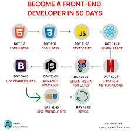

\av.sc.u4cse 25050 (UID)\webdev.jpg)
webdevlopment
Web development is the work involved in developing a website for the Internet (World Wide Web) or an intranet (a private network).

Frontend
Front-end Development is the development or creation of a user interface using some markup languages and other tools. It is the development of the user side where only user interaction will be counted.
\backend.jpg)
Backend
Backend development handles the server-side logic, database, and core functionality of web applications. It ensures smooth communication between the server and client